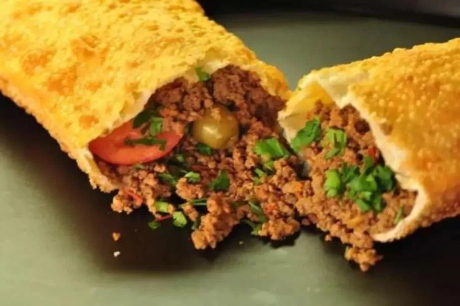

Salgados · Petiscos
Pastel de carne

Ingredientes
- 2 xícaras de farinha de trigo
- 1 ovo
- 2 colheres (sopa) de cachaça
- 1 colher (chá) de sal dissolvido em 1 xícara de água morna
- 1 cebola picada
- 1 dente de alho
- 2 colheres (sopa) de óleo
- 300 g de carne moída
- Sal e pimenta-do-reino a gosto
- 1 tomate
- 2 colheres (sopa) de salsa e cebolinha verde
- ⅓ xícara de azeitonas picadas
Modo de preparo
- Coloque a farinha de trigo numa tigela, faça um buraco no meio e junte o ovo e a cachaça.
- Junte a água com sal, aos poucos, amassando com as mãos, até obter uma massa lisa e homogênea. Embrulhe em filme plástico e deixe descansar por cerca de 10 minutos.
- Enquanto isso, prepare o recheio: frite a cebola e o alho amassado no óleo, até a cebola ficar transparente. Junte a carne e cozinhe até dourar. Tempere a gosto. Junte o tomate sem pele e sem sementes, picado, e cozinhe por 10 minutos.
- Retire do fogo e junte a salsa, a cebolinha e as azeitonas sem caroços, picadas. Deixe esfriar.
- Polvilhe uma superfície de trabalho com farinha e, com um rolo, abra a massa até ficar bem fina.
- Distribua o recheio sobre a massa, a intervalos regulares. Dobre a massa sobre o recheio, recorte formando semicírculos e aperte bem as bordas para fechar. Congele.
Observação
Para fazer pastel de queijo, substitua todo o recheio por 1 ou 2 fatias de queijo prato ou minas fresco. Congelamento: coloque os pastéis, lado a lado, em uma bandeja e leve ao freezer, sem cobrir, até ficarem duros; empilhe-os num recipiente que possa ir ao freezer, intercalando cada pastel com papel-manteiga, cubra com filme plástico, etiquete e congele. Se quiser congelar a massa sem recheio, siga a receita até o passo 2 e enrole-a em filme plástico. Descongelamento: 30 minutos antes de fritar, descongele os pastéis em temperatura ambiente. Frite em óleo bem quente, apenas 3 ou 4 de cada vez, até dourarem dos dois lados; retire com a escumadeira e deixe escorrer em papel absorvente.